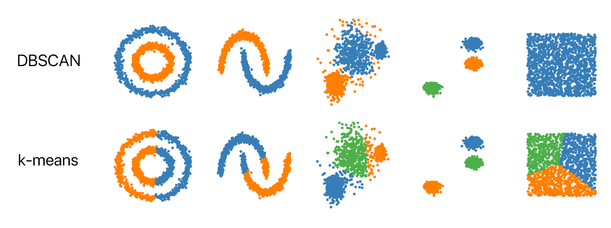
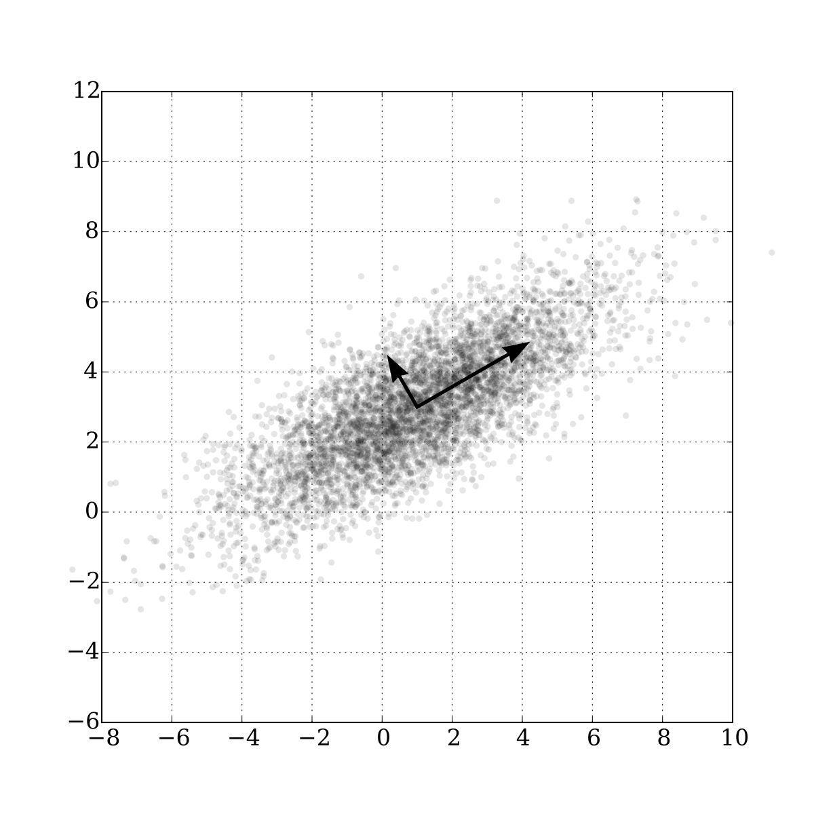

Preprocesado de los datos
Antes de aplicar algún algoritmo de aprendizaje automático, debemos considerar la forma de nuestros datos. Siempre es una buena idea que los valores de las características sean del mismo orden. Debemos evitar que unos valores sean muy grandes y otros muy pequeños. Esto hace que los algoritmos que se basan en la técnica de descenso de gradiente terminen más rápido.
Por ejemplo, si tenemos las características habitaciones y metros_cuadrados en un conjunto de datos de propiedades inmobiliarias, un valor típico puede ser \((3, 240)\). El primero valor corresponde al número de habitaciones de la vivienda y el segundo al número de metros cuadrados del terreno. El objetivo es predecir el costo de la propiedad. El primer valor en el conjunto de datos tendrá valores entre 1 y 7, mientras que el segundo puede ir de 30 a 2000. La diferencia entre ellos es muy grande. Una variación de uno en la primera entrada hace que el precio total cambie en gran medida, mientras que la misma variación en la segunda no tiene un efecto tan significativo en el valor final.
Podemos aplicar la siguiente normalización:
\[ x_i = \frac{x_i-\mu_i}{max-min}\]
donde \(m_i\) es el valor medio de los valores \(x_i\), \(\max\) y \(\min\) son el máximo y mínimo respectivamente. Esta transformación hará que los valores queden entre -0.5 y 0.5.
Análisis de Clusters
El objetivo es dividir los datos en conjuntos con elementos similares. No existe una definición formal ni única de la similaridad entre dos objetos pues depende del problema. No es lo mismo lo que entendemos cuando decimos que dos textos son similares, dos imágenes o dos canciones. Incluso cuando se habla de los mismos objetos, se debe explicar bien este concepto, por ejemplo se puede decir que dos personas son similares cuando tienen la misma apariencia o cuando tienen un carácter parecido.
Además queremos encontrar la mejor representación de los datos, es decir, la que retenga la mayor cantidad de información. Los conjuntos deben contener elementos parecidos entre sí y distintos entre los elementos de los otros clusters.
Una pregunta importante es en cuántos clusters se va a dividir el espacio. Una buena elección nos puede llevar a tener una correcta representación de los datos, pero si elegimos pocos clusters, la similaridad de los elementos en los clusters disminuirá. Para el caso en que elegimos muchos clusters, la similaridad de los elementos entre clusters aumentará. Lamentablemente no hay una manera clara de elegir el número correcto.
Las aplicaciones de esta técnica son el resumen de datos, clasificación de clientes, análisis de redes sociales, preprocesado de datos o la selección de características.
K – medias
Este algoritmos de aprendizaje no supervisado se basa en elegir representantes de datos llamados centroides. Al ser no supervisado, los datos no tienen una etiqueta, así que no existe la respuesta correcta. El algoritmo depende de la distancia que se use, generalmente será distancia euclidiana pero se puede usar cualquier otra.
Los centroides pueden ser creados en función del conjunto de datos o pueden ser elegidos de entre los ejemplos disponibles.
El número de centroides \(k\), lo define el usuario antes de correr el algoritmo y debe ser cuidadosamente elegido. Dado el conjunto de datos \(\{x_1, \ldots, x_m\}\) nuestro objetivo es encontrar \(k\) centroides \(\{c_1,\ldots, c_k\}\) para minizar
\[ O = \sum_{i=1}^m\min_jD(x_i, c_j)\]
donde \(D\) es la función distancia.
Queremos minimizar la distancia de cada punto a su representante más cercano. Para esto, se hace el siguiente proceso iterativo:
- Se eligen \(k\) centroides de alguna manera (generalmente al azar)
- Se asignan los datos a su centroide más cercano y así se crean los clusters \(C_1, \ldots, C_k\)
- De cada cluster \(C_i\), se elige el representante óptimo que minimiza la función \[ \sum_{x_j\in C_i}D(x_j,c_j)\] que se puede hacer tomando el promedio de los puntos del cluster. Esto se repite hasta que los centroides cambian menos que un umbral establecido.
DBSCAN
Una alternativa es el DBSCAN que usa la densidad de los puntos para formar los clusters. La densidad de los puntos se obtiene contando el número de puntos dentro de una bola de radio \(R\) y se clasifican en núcleo, frontera o ruido. Un punto se clasifica como núcleo si la bola tiene al menos \(t\) puntos. Se clasifica como frontera si la bola tiene menos de \(t\) puntos pero uno de ellos es núcleo. Y es ruido su no es núcleo ni frontera.
Ya que los puntos se clasificaron, se crea un grafo donde se conectan los puntos y al final las componentes conexas se convierten en los clusters. Los puntos de ruido son ignorados.
Validación
Para comparar diferentes algoritmos o diferentes corridas del mismo algoritmo, necesitamos evaluar la calidad de los clusters. Al ser un problema no supervisado, no contamos con las etiquetas que nos permitan saber la verdadera forma de los cluster, entonces, cualquier evaluación va a tener sesgos y no puede haber un ganador absoluto.
Hay diferentes maneras de evaluar y cada una puede veneficiar más a un tipo de algoritmo. No hay manera universal de evaluación y hay que ser muy cuidadoso a la hora de elegir un criterio.
Suma del cuadrado de las distancias. Se toma la suma de las distancias al cuadrado de los puntos a su representante. Esta métrica favorece a k-means sobre DBSCAN. A menor valor, se considera una mejor formación de los clusters.
Razón de la distancia Intra-cluster con Inter-cluster. Se toma un conjunto pequeño de pares de datos, de ellos, sea \(P\) el conjunto de los pares que pertenecen al mismo cluster y \(Q\) el resto.
\[ intra = \sum_{(x_i,x_j)\in P}\frac{D(x_i,x_j)}{|P|}\] \[ inter = \sum_{(x_i,x_j)\in Q}\frac{D(x_i,x_j)}{|Q|}\]
La medida se define como \(\frac{intra}{inter}\). Valores pequeños indican mejor calidad de los cluster.
Silueta. Sea \(D_{in}(i)\) la distancia promedio de \(x_i\) con los elementos de su cluster. Sea \(D_{out}(i)\) la distancia promedio de \(x_i\) con los elementos que no están en su cluster. Sea \(D_{min}(i)\) el mínimo de \(D_{out}(i)\). Entonces el coeficiente de silueta para \(x_i\) es
\[ S_i = \frac{D_{min}(i)-D_{out}(i)}{\max(D_{min}(i),D_{out}(i))}\]
El coeficiente total es el promedio de los coeficientes para todos los datos. Varía entre -1 y 1, valores positivos indican que los clusters están separados mientras que valores negativos dicen que los clusters se tocan.
En la siguiente imagen se puede observar una comparación de los dos principales métodos de clusters.

Análisis de componentes principales
El Análisis de Componentes Principales (PCA) es un algoritmo de aprendizaje no supervisado que aprende la representación de los datos. Lo que se busca es que esta representación tenga una dimensión menor que la de los datos originales. Esto tiene varias ventajas, como la disminución del espacio requerido para su almacenamiento. El conjunto de datos original puede ser demasiado grande para poder ser leído en memoria principal, lo que nos obligaría a mantenerlo en la memoria secundaria. El principal problema en este caso es que, típicamente, la memoria principal es unas 500 veces más rápida que la secundaria y los tiempos de procesamiento se pueden hacer demasiado grandes.
La principal ventaja de la disminución de la dimensión es la visualización. Los conjuntos de datos suelen tener dimensiones muy grandes, como 10, 100, o 1000, muchas más de las 3 que podemos representar en una gráfica. Es por eso que la reducción de dimensión a 2 ó 3 sea muy común.
La técnica del PCA busca que los datos finales no tengan una correlación lineal entre ellos. Por ejemplo, piense que se tiene un conjunto de datos con dos características, Peso y Altura de 100 personas elegidas en la calle. Las dos variables deben mostrar una correlación pues, típicamente, a mayor altura, mayor peso. Tenemos dos variables pero su comportamiento va a ser muy parecido entre ellas. Bien podríamos desechar una de ellas.
Otra de las ventajas del uso de PCA es que aprende una transformación ortogonal que alinea las direcciones de máxima varianza de los datos con los ejes. Esto se puede ver en la siguiente figura. En ella se ve el conjunto de datos original en dos dimensiones. Note que los datos no se encuentran centrados en el origen y los ejes de la gráfica no coinciden con los de los datos. Las flechas en el centro de los datos nos indican los ejes que selecciona el algoritmo de PCA. Se puede observar que los datos quedan centrados en cero y los ejes se alinean con los ejes naturales de los datos.
Es por eso que PCA se puede usar para preprocesar los datos antes de aplicar algún otro algoritmo de aprendizaje automático.

Es por eso que PCA se puede usar para preprocesar los datos antes de aplicar algún otro algoritmo de aprendizaje automático.
Referencias:
Aggarwal, Charu C. (2015). Data Mining The textbook Páginas 27-62 Enlace: https://link.springer.com/book/10.1007/978-3-319-14142-8
Goodfellow Ian, Bengio Yoshua y Courville Aaron () Deep Learning, Enlace: http://www.deeplearningbook.org